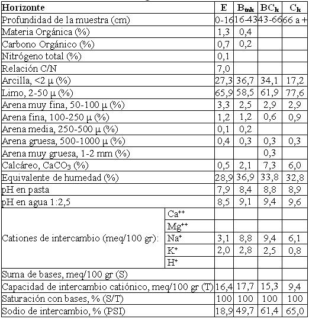

Natrustalf típico, limosa fina a fina, mixta, térmica (calcárea)
Capacidad de uso: VIsc
Es un suelo imperfectamente drenado desarrollado sobre sedimentos eólicos puros en planos extendidos con escurrimiento lento en superficies muy estables. Se encuentra severamente limitado por alcalinidad sódica fuerte, baja fertilidad y drenaje deficiente Normalmente se encuentra asociado a otros suelos de mejor aptitud conformando complejos de suelos con una distribución cambiante en pocas decenas de metros de distancia. Presenta un horizonte superficial E de 17 cm de espesor, con estructura en bloques tendencia masiva. Continúa hacia abajo un horizonte enriquecido en arcillas iluviales sódicas (36%), fuertemente alcalino sódicas con textura franco arcillo limosa y estructura en prismas fuertes. Y muy abundantes barnices en las caras de los agregados, tiene moderada a débil reacción al ClH en la masa del suelo. Se extiende hasta 43 cm de profundidad. El material originario del suelo se encuentra a 66 cm de profundidad con carbonatos libres y fuertemente alcalino sódico.
Descripción del perfil típico:
Un perfil representativo de este suelo fue descripto a 9 km al Este de El Alcalde, departamento Río Primero, provincia de Córdoba.
E 0-16 cm; color en húmedo pardo oscuro (10YR3,5/3), franco limoso a franco arcillo limoso, estructura en bloques subangulares tendencia masiva, friable en húmedo, ligeramente plástico, no adhesivo, pH 7,5, raíces comunes a escasas, límite inferior abrupto.
Btnk 16-43 cm; color en húmedo pardo amarillento oscuro (10YR3/4), franco arcillo limoso, estructura en prismas irregulares medios moderados, friable en húmedo, plástico; adhesivo, pH 9,1, moderada reacción al ClH en la masa del suelo, barnices húmico arcillosos muy abundante medios, vestigios de raíces, límite inferior claro suave.
BCk 43-66 cm; color en húmedo pardo amarillento oscuro (10YR4/4), estructura en bloques gruesos tendencia a prismas débiles, friable en húmedo, ligeramente plástico, ligeramente adhesivo, pH 9,4, moderada reacción al ClH en la masa del suelo, barnices arcillosos comunes a escasos; límite inferior gradual.
Ck 66 a más; color en húmedo pardo a pardo oscuro (7,5YR4/4), masivo, muy friable en húmedo, no plástico, no adhesivo, pH 9,6, violenta reacción al ClH en la masa del suelo.
Cuadro Nº16
Datos analíticos Serie ESTANCIA LA OLGA
Situación: Latitud: 31º05’S Longitud: 63º31’O Altitud: 172 m.s.n.m.

|